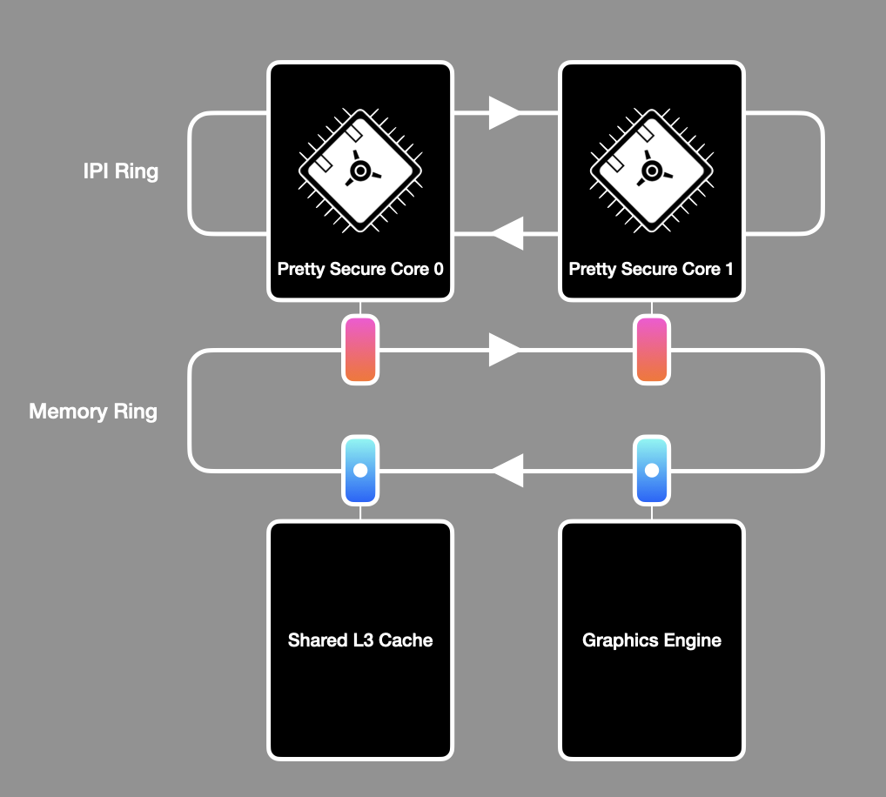

Pretty Secure Processor is the CPU used in the CPU fuzzing lab this semester. Specifically, the version of the CPU is a fork of the open-source CPU created by Joseph Ravichandran with intentional CPU bugs and backdoors added for students to discover and exploit. Pretty Secure Processor supports advanced debugging capabilities allowing you to debug your code on the CPU.
This page provides an overview of the Pretty Secure System – Pretty Secure Processor plus the simulation and runtime features.
Frequently Asked Questions
- What is Pretty Secure Processor?
- How do I debug my code on Pretty Secure Processor?
- What memory resources are available within Pretty Secure Processor?
- What are CSRs?
- How does Pretty Secure Processor communicate with the outside world?
- Privilege Modes
- Documentation: Where do I learn more?
What is Pretty Secure Processor?
Pretty Secure Processor is a fully-featured synthesizable RISC-V CPU and simulator framework. It has a lot of features that we will not use in this lab. This section provides an overview of the platform for providing background context for how the lab works, but is not needed to solve the lab. You can skip ahead to debugging if you are not interested in the CPU/ simulator internals.
Pretty Secure Processor is an rv32i CPU that supports two privilege modes – user (PSP_PRIV_USER) and machine (PSP_PRIV_MACHINE). It supports parts of the privileged RISC-V specification (although it deviates from the spec in a number of ways), meaning the CPU has support for Control and Status Registers (CSRs), privileged instructions like mret, and exceptions, interrupts, and system calls (with the ecall instruction).
Under the hood, Pretty Secure Processor is a single core that exists as part of a bigger multicore system (called “Pretty Secure System”). Every Pretty Secure Processor core (referred to as “PSP core” for short) supports a private split L1I/ L1D cache and unified L2 cache. These cores all communicate on a shared memory ring where a variety of memory-mapped peripherals exist as nodes, such as the shared L3 cache, graphics memory, and VGA style text memory.

An overview of the Pretty Secure System. Your code runs on Pretty Secure Core 0.
Pretty Secure System is centered around a fully featured simulation framework that allows for in-depth debugging and analysis. This testbench is implemented as a Verilator C++ testbench, allowing the simulated core to communicate over the network and interact with you, the user, like any other program. For this lab, you will use two features in this framework: the emulated serial device and GDB server for debugging.
Your code runs on core 0 and should ignore any other cores present. Note that we have turned off the CPU caches to make this lab simpler, so the memory ring is unused in this lab.
For the CPU fuzzing lab we have disabled CPU caching, making it easier for you to write self-modifying code if you wish (as you do not need to worry about flushing the instruction cache after modifying the code).
The IPI ring is also not used in this lab. IPI stands for inter-processor interrupt and is used as a mechanism for triggering exceptions on remote cores (thus allowing cores to wake each other up and send messages back and forth). As all non-bringup cores are unused in this lab, you do not need to use IPIs. An IPI can be triggered by writing to a special memory address that maps to what we call the System Management Core, which causes an IPI packet to be sent to a remote core, triggering an interrupt exception.
The memory ring is disabled as this ring is only used by the cache hierarchy. In the CPU fuzzing lab, each CPU core has a completely private single-cycle “magic” SRAM region that is used in place of the caches.
How do I debug my code on Pretty Secure Processor?
Pretty Secure Processor supports a custom GDB server that allows you to debug the simulated RTL itself using familiar GDB commands. Our GDB integration will allow you to set breakpoints, step through code, inspect registers, and dump memory. It does not allow you to modify any CPU state; it is a read-only view of the CPU architectural state.
You can run the simulator in debug mode by calling it with --debug and then connecting a GDB to the simulator using ./gdb.sh (which internally runs GDB’s target remote command). You only need to manually specify the debug port through which simulator and GDB communicate with each other: Edit debug.sh and fill in SHD_DEBUG_PORT with the debug port that was emailed to you.
In one window:
$ cd part1 && make && cd ..
$ ./run.sh part1 --debug
Waiting for debugger on port XXXX...
In another window:
$ ./gdb.sh
...
Remote debugging using localhost:XXXX
start () at bringup.s:44
44 la x1, exception_handler_entry
(gdb)
Moving back to the first window, you should see:
Debugger attached!
Now you are in a GDB session running on PSP! You can set breakpoints, inspect registers, and step through the assembly to see how your code is behaving.
Why is GDB read-only on PSP?
The GDB server passively observes the writeback port of the pipeline for completed instructions, reading the CPU architectural state by inspecting the core’s register file and reading control words from the end of the writeback stage. As the Pretty Secure System utilizes multiple levels of caching across multiple cores, for simplicity the GDB server provides a read-only view of memory implemented by a per-core non coherent shadow SRAM that observes all CPU reads/ writes.
Modifying architectural state would require the debugger to be capable of modifying controlwords and hazard dependencies of in-flight instructions and injecting data into the caches (and updating the replacement policy state accordingly). As the debugger was originally built to verify the RTL is functioning correctly, we did not build these features into it.
What memory resources are available within Pretty Secure Processor?
The Pretty Secure Processor memory map contains both an emulated SRAM region and a variety of memory-mapped IO (MMIO) peripherals. For the sake of this lab, you should ignore all of the MMIO devices, and only worry about the SRAM main memory region.
SRAM is read/ write/ execute enabled and begins at 0x00000000 and ends at 0x04000000. All of your code and data will be placed within SRAM automatically by the build system. The system stack will also be located within SRAM. If your program requires more memory than is available, you will get a linker error when you try to compile it.
While all of memory is RWX (meaning that you can write code that modifies it self), writing self-modifying code is tricky. In-flight instructions in the pipeline may not have observed all memory writes, meaning they may be executing older versions of the instructions that were just changed. As PSP does not support any memory fencing instructions, you must take care to flush the pipeline before executing any modified instructions. You can do this by running 5
nopinstructions after writing to instructions you intend to run.
All PSP cores in a system begin execution at reset by fetching the first instruction from 0x00000000. Note that all cores execute this first instruction together, so system software should begin by initializing all system registers (eg. the exception handler, interrupt state, etc.) and then put all cores to sleep but the bringup core. Core bringup (including putting non-boot cores to sleep) is handled for you in bringup.s, and linker.ld tells the linker where SRAM is.
When your C/ ASM code is built, it is automatically linked and loaded into SRAM properly by the linker script linker.ld.
There is no virtual memory support or memory protection on PSP. You will need to very carefully monitor all memory usage by your program. For example, if your stack overflows, it will just start writing data everywhere!
What are CSRs?
Control and Status Registers (CSRs for short) are special privileged CPU registers that configure how the CPU behaves. They can be read/ written with the csrr, csrw, and csrrw instructions while operating in PSP_PRIV_MACHINE mode.
| Instruction | Example | Usage |
|---|---|---|
csrr- CSR Read | csrr x1, SOME_CSR | Read SOME_CSR into register x1. |
csrw- CSR Write | csrw SOME_CSR, x1 | Write x1 into SOME_CSR. |
csrrw- CSR Read and Write | csrrw x1, SOME_CSR, x2 | Read SOME_CSR into register x1 and simultaneously write x2 into SOME_CSR. |
Pretty Secure Processor features some of the CSRs defined by the RISC-V privileged specification, simplified for a classroom setting. Here is a brief listing of the CSRs you will find relevant for this lab.
| Address | Name | Meaning |
|---|---|---|
0x037 | utimer | Current Time (cycles) |
0x200 | SOFTSERIAL_FLAGS_CSR | Returns whether data is available for reading on the serial port. |
0x201 | SOFTSERIAL_IO_CSR_IN | Softserial data entering the CPU. |
0x202 | SOFTSERIAL_IO_CSR_OUT | Softserial data leaving the CPU. |
0x305 | mtvec | Machine Trap Vector Table Pointer |
0x340 | mscratch | Scratch Register |
0x341 | mepc | Exception Saved PC |
0x342 | mcause | Exception Cause |
0x399 | mpp | Previous Privilege Level |
0xf14 | mhartid | Hardware Thread (core) ID |
CSRs with a u in front of them are accessible in userspace (and machine mode), and those with an m in front of them are accessible from machine mode (high privilege mode). More information on the privilege modes can be found below. Here is a description of each of these CSRs:
utimer
This is a cycle counter, analogous to tsc on x86_64. Read it to get a high resolution cycle count! This one is accessible from all privilege levels, as it is a userspace CSR.
Softserial
These CSRs correspond to the softserial device, which is described in the IO section.
mtvec
The Machine Trap Vector Table Pointer points to where the CPU jumps to during an exception condition. When an exception occurs, pc is loaded with the contents of mtvec (essentially jumping the CPU to mtvec).
It is set to the address of the exception handler entrypoint in bringup.s.
mscratch
Do whatever you want with this! It’s just a free register.
mepc
When the CPU enters an exception, it records the pc of the faulting instruction in mepc. It essentially performs the same role as the return address register (ra) (AKA x1) does during a regular function return. When mret is executed to leave an exception context, the CPU loads pc with mepc to return to the faulting instruction.
An exception handler can increment mepc before executing mret to skip over the faulting instruction.
mcause
When the CPU enters an exception, the hardware automatically populates this CSR with the reason for the exception.
mpp
When the CPU enters an exception, the CPU records its previous privilege level here. On mret to exit the exception, the CPU restores the privilege level to whatever mpp contains.
mhartid
This is 0 for core 0, 1 for core 1, etc.
mie / mpie
mie specifies whether interrupts are enabled or not, and mpie is the saved value of mie to be restored at mret. In this lab, these CSRs can be ignored (as no interrupt-generating devices are attached to the simulated SoC). You will see these set in bringup.s, they can be left as is (you don’t need to change them).
How does Pretty Secure Processor communicate with the outside world?
In this lab, the only form of IO will be through an emulated serial port we call softserial. You have seen serial ports in the Physical Attacks lecture and recitation, and you can think of this serial port in the same way. This serial port is implemented as a set of CSRs that the CPU can read/ write to perform IO operations, defined as followed:
| CSR | Address | Function |
|---|---|---|
SOFTSERIAL_FLAGS_CSR | 0x200 | Returns whether data is available for reading. |
SOFTSERIAL_IO_CSR_IN | 0x201 | Data entering the CPU. |
SOFTSERIAL_IO_CSR_OUT | 0x202 | Data leaving the CPU. |
When data is ready for the CPU to read, SOFTSERIAL_FLAGS_CSR is set to SOFTSERIAL_FLAGS_WAITING. The CPU can poll this register to learn when data is ready to be read. If there is data available, when SOFTSERIAL_IO_CSR_IN is read, the ASCII code for that character will be returned. The CPU then sets SOFTSERIAL_FLAGS_CSR to SOFTSERIAL_FLAGS_CLEAR to indicate it has read and received the available byte. The CPU can output data at any time by writing to SOFTSERIAL_IO_CSR_OUT, which will output text to the terminal.
We have provided a full serial driver for you in the starter code distribution in serial.c and serial_csr.s, allowing you to use the serial port without needing to implement these low-level details. However, we encourage you to read through the serial driver and understand it, as understanding it will help with understanding how to read CSRs for later parts of the lab.
In utils.c we have implemented a version of printf that you can use to print debug information. printf utilizes the softserial driver to display information in the terminal. Note that our starter printf only supports %x, %c, and %s– NOT %d or any advanced formatter codes! (Feel free to add support for any other format strings if you want though!)
Privilege Modes
The RISC-V Privileged ISA specification defines four privilege modes that a CPU can support – User, Supervisor, [Reserved], and Machine. Of these four, Pretty Secure Processor implements two – User and Machine, which we call PSP_PRIV_USER and PSP_PRIV_MACHINE. You can think of them like ring 3 and ring 0 (userspace and kernelspace) on x86_64 machines, like we saw in the spectre lab.
| Mode | Code | Restrictions |
|---|---|---|
PSP_PRIV_USER | 0x0 | Cannot read machine CSRs. |
PSP_PRIV_MACHINE | 0x3 | None. |
During bringup, the CPU begins executing in PSP_PRIV_MACHINE and has access to all CSRs. When the CPU transitions into PSP_PRIV_USER, certain CSRs will be blocked. In this lab, one of your tasks is to find a backdoor in the CPU allowing you to elevate your privilege level from user mode to machine mode to dump privileged CSRs that cannot be read from user mode.
Note that there is no way to read the current achitectural privilege level on Pretty Secure Processor as it is not stored in a CSR (it is saved in an architecturally transparent register). The privilege level can be inferred by attempting to read a privileged CSR.
Privilege Transitions – Exception Entry
Privilege transitions happen in one of two ways – exception entry (an interrupt, system call, or exception occurred), or exception exit (the CPU ran mret). First, if the CPU encounters an exception, it will immediately switch into PSP_PRIV_MACHINE mode to handle it. The CPU will also save a few CSRs by writing them into their “previous” counterparts so they can be restored later. For example, the privilege level is recorded into mpp (Machine previous privilege) as we always move to high privilege mode during exceptions, and need to know which mode to return to when we execute mret (see Exception Exit).
Here is the actual RTL that is executed on an exception condition:
csr[mepc] <= exception_saved_pc; // Save address of the instruction that caused the exception
csr[mpp] <= psp_priv_level; // Save current CPU privilege level
csr[mcause] <= exception_cause; // Load reason for the exception
psp_priv_level <= PSP_PRIV_MACHINE; // Transition to machine (privileged) mode
Privilege Transitions – Exception Exit
After handling the exception, system software can execute the special mret instruction to return from the exception context. This is the only way for the CPU to move from PSP_PRIV_MACHINE to PSP_PRIV_USER. This undoes what happens during exception entry. Here is a pseudocode for the RTL that is executed on mret:
psp_priv_level <= csr[mpp]; // Set the privilege level to what is in mpp
pc <= csr[mepc]; // Jump to wherever mepc points
You do not need to be in an exception context to use
mret!That is, you can run
mretat any time if you are in machine mode – you don’t have to have just begun an exception to use it.For example, in
bringup.s, we executemretearly on to jump into the main C code. We do this because usingmret(again, even though we aren’t in an exception!) is the only way to change the CPU privilege level toPSP_PRIV_USER. Essentially, it is a convenient way to set the privilege level and executeretall in one.
Documentation: Where do I learn more?
Throughout this lab, it may be helpful to refer to the RISC-V specification to refresh yourself on the RV32I instruction encoding.
You do not need to read the specification cover to cover! We will link to specific chapters and pages to refer to when you need to. You might find exploring them useful regardless.
RISC-V ISA Volume I: Unprivileged Specification (regular instructions)
This walks through the RISC-V instructions. The rv32i ISA is described in Chapter 2 (page 13). All instruction encodings are listed on page 130.
RISC-V ISA Volume II: Privileged Specification (system instructions and CSRs)
This walks through the privileged ISA. It is a good resource to refer to if you are confused on how certain CSRs work.
RISC-V assembly format of instructions directly implemented by the hardware and pseudo instructions
When you try to write assembly code of RISC-V instructions, These documents summarize their formats.
RISC-V Calling Convention
This document walks through how to call C methods from assembly. Table 18.2 will be useful!
RISC-V Assembly Programmer’s Manual
This provides an overview of what the RISC-V assembler is doing “under the hood” – demystifying various pseudoinstructions.
Pretty Secure Processor Complete Documentation
Chapters 3 and 4 describe the Pretty Secure Processor hardware and how to write software for it.
Deviations from the RISC-V Specification
Pretty Secure Processor makes a number of simplifications to make it easier to write software for. It does not implement the full privileged specification, for example there is no mstatus register. It also includes some non standard CSRs such as utimer and the softserial device. In general, concepts from the RISC-V Privileged ISA will be applicable on PSP, but refer to the CSRs and behavior listed here as the primary resource on how to use PSP.